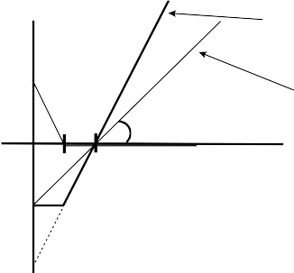

t k 1s V V
N f ,t k
N f ,t
t k t
(12.51)
f q St k St
In this case, the conditions that determine whether there are net purchases or net sales are exactly the same as they were in the preceding subsection with only cash and futures.
Leveraging a portfolio increases the risk of the portfolio. In fact, except in the case of index options that amplify only gains, leverag- ing itself can create unrecoverable losses—ones that run in excess of the equity in the portfolio. In order to maintain the portfolio’s liq- uidity, a manager must purchase some form of portfolio insurance. Although there are various ways to achieve this downside protec- tion, we shall focus on how to use out-of-the-money put options to prevent the levered portfolio’s losses from exceeding the amount of equity in the portfolio. This method is simple to implement.
First, we need to compute the index loss that would exactly use up the equity value of the portfolio. Once we know this value, we can purchase the appropriate put options in terms of strike price and quantity. Liquidity buffering is applicable to all the lever- aging methods discussed in this chapter, but we will focus on applying it to the cash and futures leverage case.
When we create leverage with cash and futures, we know that in a period of time between t and t + k, the value of the portfolio’s equity equals
Vt k N f ,tqFt k Ft It,t kVt
N qS r
N qS r
N qS r
f I V
f ,t t t,t k t,t k t
(12.52)
f t
f t
f t
Vt f

qS qStrt,t k It,t kVt
where r f (F — F )/S , and all other variables have been
t,t+k t+k t t
defined previously. The goal is to find the strike price of the put options at which all the portfolio’s equity would be consumed. This is the point at which closing the futures position would wipe out the portfolio’s equity. By purchasing put options at this strike price, any further deterioration in the returns of the index and futures would be completely offset by the put options. There

would be no further loss in portfolio value, making the leveraged portfolio feasible.
t,t
t,t
t,t
Assuming for simplicity that there is no basis risk (i.e., that we can substitute rt,t+k for r f +k, since they are equal), we must find the index return at which all the account equity would be dissolved.37 This would be the value that equates the loss on the futures posi-
tion with the current account equity multiplied by the interest factor, that is,
*V
which implies
t qStrt,t k It,t kVt
f qSt
(12.53)
r
r
r
t,t k
f It,t k
(12.54)
Let us return to the example we used in the preceding sub- section. Suppose that the portfolio manager’s target * = 2, f = 1, the index value on day t is 1000, and the futures’value on day t is 1007.53. We also will assume for simplicity that interest rates are 0, or that It,t+k = 1. The return that would consume the account equi- ty over the k-period horizon would be -0.5, or a negative return of 50%.
We have derived this return on day t, so we need to find the actual strike price of the put options to purchase. In particular, if the index is trading at St , then we will want to purchase options with a strike price K = (1 + r *t,t+k)St. Thus, in our particular exam- ple, we would purchase options with a strike price of 500 (or the closest value to that).
The final step is determining how many options contracts to
purchase. The simplest method is to use a dollar hedge adjusted for
. Thus we compute the number of options contracts to purchase, given the of the underlying index. Thus
Vt
NO
OqOSt
(12.55)

37 With no basis risk, Ft+k - Ft = St+k - St ; thus (St+k - St)/St = (Ft+k - Ft)/St. The former is the return on the underlying equity index, which we call rt,t+k, and is what we are interested in because the options depend on the value of the underlying index, not the futures. Some people might wish to define the return on the futures contracts as (Ft+k - Ft)/Ft , but it really does not matter for this analysis. We are merely transforming the equation into the item we are interested in.
F I G U R E 1 2 . 4
Portfolio payoffs with and without leverage and liquidity buffering.

V(t)
Payoff with 2x leverage & put option
Payoff without leverage
45
S(t)
K 1000
where O represents the of the options that we will assume is the same as the underlying index or futures contract, qO is the contract multiplier, and NO is the number of options contracts to purchase.38 Thus, in our previous example with * = 2, f = I = 1, St = 1000, Ft = 1007.53, and qO for the S&P 500 being equal to 100, the number of options contracts to purchase is 2000.
An illustration of the overall payoff to the portfolio when out-
of-the-money options are used to limit the losses of the portfolio to the equity capital is shown in Fig. 12.4. The resulting portfolio looks similar to an in-the-money call option purchased at strike price K and purchased so as to have a twofold exposure to the index in this particular case.

38 In the daily risk management of option contracts, the of the options contract is actually not the same as the underlying index. It is actually O = f , where is the option’s
. The reason that we assume that it is same as the underlying contract is that our
purpose for creating this option is not for daily risk management but rather to protect against the catastrophic scenario of a huge negative return. In this particular case, the of the option will converge to 1 very quickly; thus, for the purposes of liquidity protection, we assume that it is 1 from the onset.

We have closed the matter for day t. We have created a lever- aged portfolio and purchased out-of-the-money put options to protect the liquidity of the account. We should note that these options are extremely out of the money, and index options are not typically available extremely out of the money. It is rare, even on a major index, to find any active trading in options even 20% out of the money. When it does happen, the bid-ask spreads are very wide.
Therefore, practically speaking, creating this type of leverage requires the portfolio manager to form some kind of over-the- counter (OTC) trade with one of the major broker-dealers. The port- folio manager can have the structured desk of a broker-dealer create these, or the broker-dealer can create them with flex options. Flex options (flexible options) are customized equity or index options contracts available on a number of exchanges, including the Chicago Board Options Exchange (CBOE). The flexible elements of the options include the strike price, contracts terms, exercise styles, and expiration dates. Flex options eliminate counterparty risk because they are guaranteed by the Options Clearing Corporation, and they offer more liquidity than a typical OTC contract because they trade on a secondary market. They can be traded in size, expanding or even canceling entire positions.
These options might cost slightly more than the Black-Scholes
or standard option-pricing model would predict, but being extremely out of the money, they still would be very cheap.39
Continuing with the preceding example, we need to purchase 2000 put option contracts at a strike price of 500. Using the Black- Scholes formula with an interest rate of 3%, a volatility of the S&P 500 of 20%, and a time to maturity of 3 months, the Black-Scholes price for one option is $1.16 · 10—11. The cost of 2000 contracts is thus $2.32 · 10—6. As a percentage of the equity capital, this is
$2.32 · 10—14%. Clearly, the cost of this insurance, at least theoreti- cally, is insignificant. In reality, the broker-dealer might charge as much as 5 cents per options contract.
To absolutely protect the equity value of the portfolio, one would need to rebalance these options daily. Some mutual funds require daily rebalancing. From a practical perspective, though,

39 The theoretical Black-Scholes price of these options is infinitesimal, but the broker-dealer typically charges more because, at “fair value,” he or she earns next to nothing for taking on a huge risk.